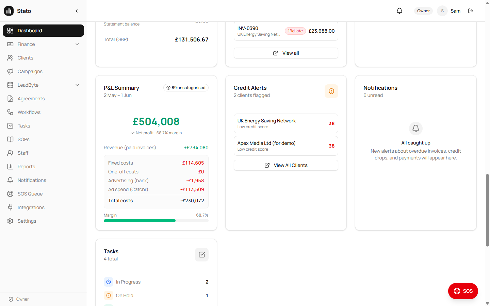
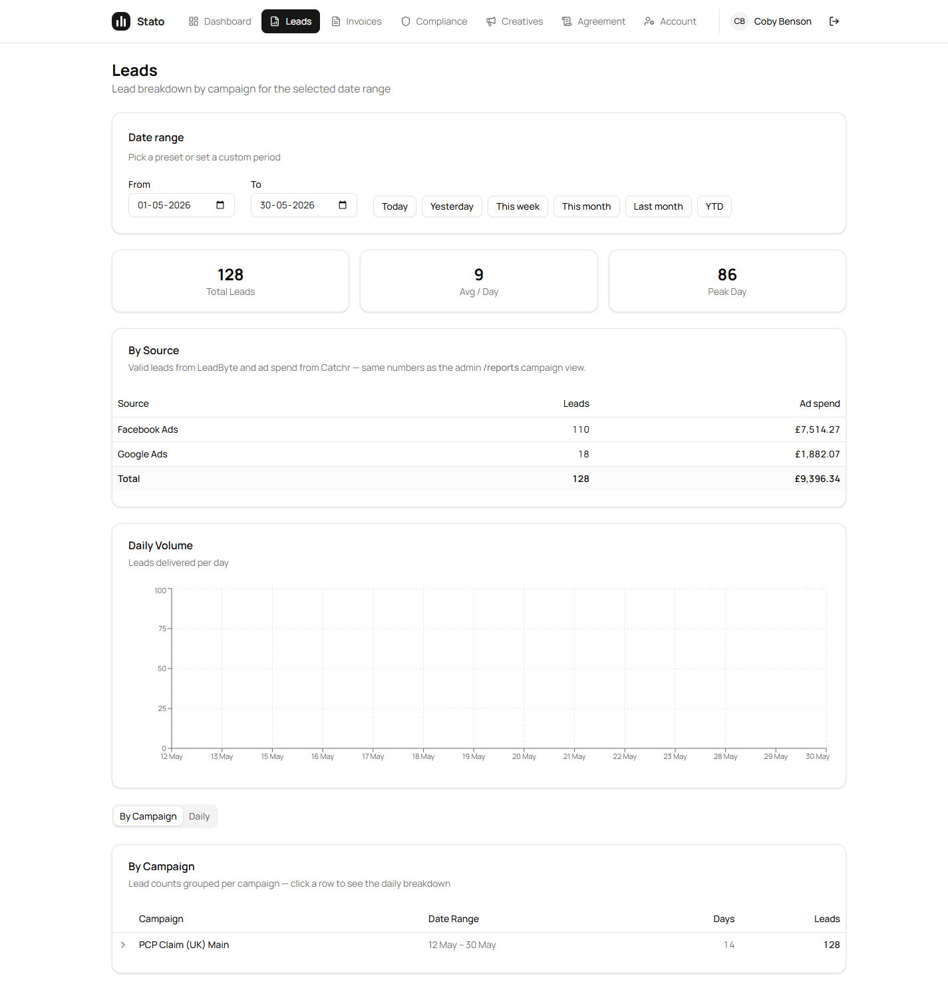
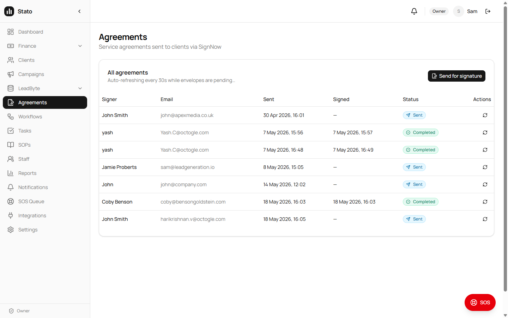
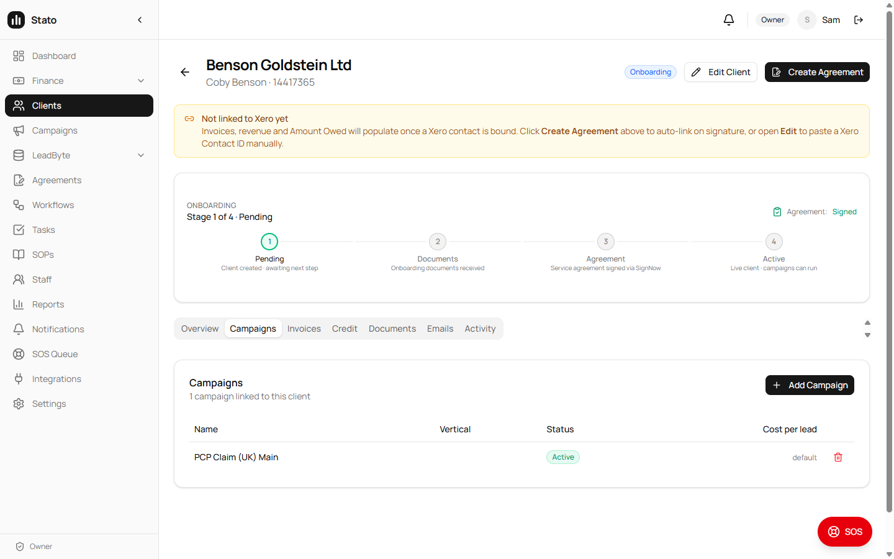
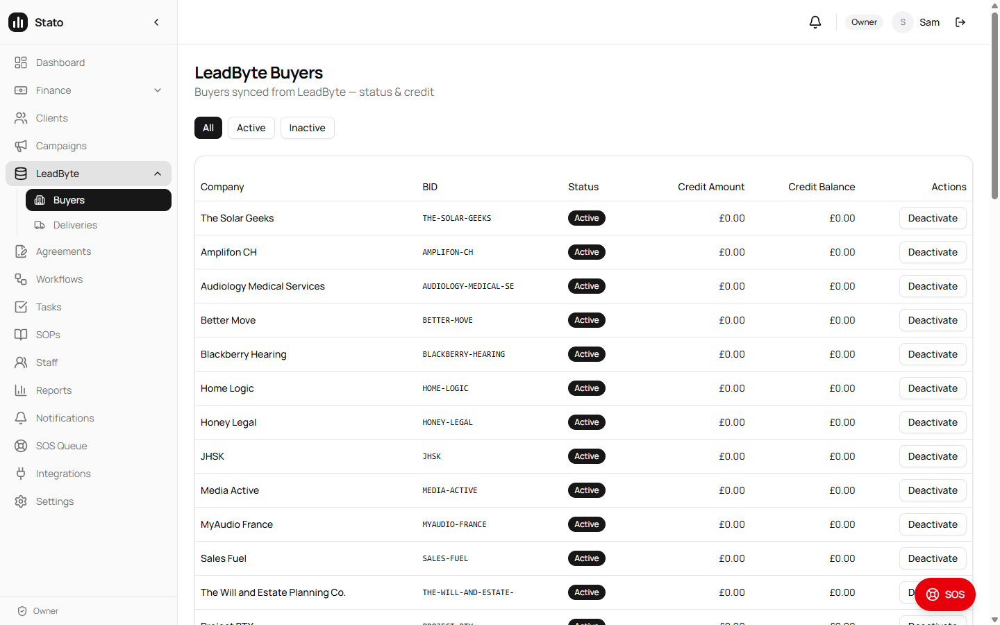
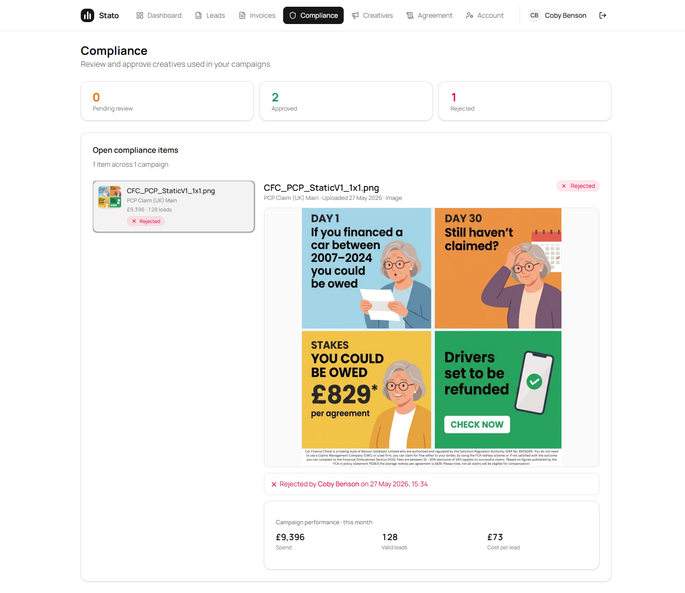
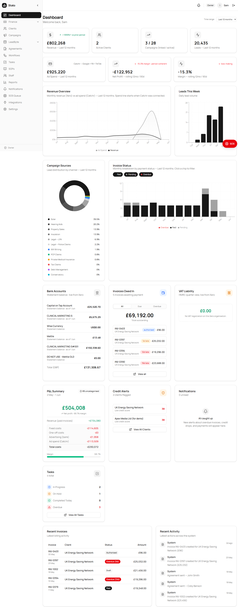

Sam — this batch came entirely from our own end-to-end audits of the live platform, not from a complaint. We walked every admin and portal page, found the places where two screens showed the same thing differently, and shipped the fixes. 10 consistency fixes live across the admin panel and client portal, each verified on prod signed in as the real client.
The theme this round: the admin side and the portal side now agree everywhere — the same lead count, the same spend, the same agreement status, on whichever screen you open.
Problem: on the portal Leads page the summary tile read 110 valid leads (LeadByte truth) but the By Campaign table below it still read 144 — because the table counted every supplier including Direct and unmapped sources. Two numbers, same "Leads" label, same page.
Fix: the By Campaign table now applies the same LeadByte per-supplier truth the summary tile and admin /reports use. The table and the tile now show the same number for the same campaign and date range.
Verified live on prod: PCP Claim shows 110 in both the tile and the table.
Fix (3 copy issues):
Problem: for a client signed off offline (the admin "mark as signed" override), the portal and dashboard correctly showed "Signed", but the admin Agreements page still read "Sent" from the raw envelope row. Internal and external screens disagreed on the same agreement.
Fix: the admin Agreements list now honours the same signed-override the portal already respects, so both surfaces read "Signed". Locked in with regression tests so it can't silently drift back.
Verified live: Benson Goldstein reads "Signed" on the admin Agreements page and on the portal.
Problem: on the client record the linked-campaign row showed a "Remove undefined" label and the unlink button targeted the wrong id, so removing a campaign didn't work. Campaign name / vertical / cost-per-lead weren't coming through either.
Fix: the backend now returns the campaign name, vertical and cost-per-lead the client record expects, and the unlink button targets the campaign correctly — "Remove" now works and shows the real campaign name.
Problem: clients like UK Energy Saving Network and Benson Goldstein showed 0 linked campaigns even though they clearly had active campaigns — the count was reading an older single-link field that's empty for multi-buyer campaigns.
Fix: the count now reads the proper campaign-to-client link table, so the number reflects the real linked campaigns.
Problem: the admin Dashboard P&L line for Catchr ad spend showed £0 while the Reports page showed the real figure — they were computing spend two different ways, and the dashboard's method excluded every Catchr row.
Fix: the dashboard P&L now attributes Catchr spend the same way the Reports page does (through the ad-account → campaign links), de-duplicated for Catchr's re-auth duplicates. The Dashboard P&L and Reports now match instead of disagreeing.
Problem: the Dashboard and the Reports page cached the same LeadByte data for different lengths of time, so depending on which page you opened first, the two could show slightly different numbers for a while.
Fix: unified the cache lifetime so both pages read the same freshly-cached data — they stay in step.
Problem: LeadByte's API returns the same legal entity twice when it has both a legacy numeric ID and the newer slug ID — so "Trustmark Law" appeared twice in the Buyers list and read as a Stato bug.
Fix: the Buyers list now de-duplicates by company name, keeping the current slug ID. One row per buyer.
Problem: when a prior period's revenue was near zero, the period-over-period change blew up to things like "+88,333.5%" and a -2,746% margin — mathematically real, but it reads as broken.
Fix: these now display capped at ±999% with an up/down arrow. The underlying £ revenue and £ change figures stay exact — only the derived ratio is clamped for readability.
Problem: on the same dashboard one widget showed £305,840.32 next to a tile showing £305,840 — same number, two formats.
Fix: the P&L widget now uses whole-pound formatting to match the tiles, so the page reads as one consistent unit. Detail pages still show pennies where line-item precision matters.
| # | Fix | Surface | Status |
|---|---|---|---|
| 1 | Leads By Campaign table matches the summary tile (110, not 144) | Portal | Live |
| 2 | Compliance header + window label + hide "NA" feedback | Portal | Live |
| 3 | Admin Agreements shows "Signed" (matches portal override) | Admin | Live |
| 4 | Client record "Remove" button + campaign name/vertical/CPL | Admin | Live |
| 5 | Active campaign counts real (was 0) on client list | Admin | Live |
| 6 | Dashboard P&L Catchr spend real (was £0), matches Reports | Admin | Live |
| 7 | Dashboard ↔ Reports cache unified (no mid-day drift) | Admin | Live |
| 8 | Duplicate LeadByte buyer de-duplicated | Admin | Live |
| 9 | Runaway % capped at ±999% with arrow | Admin | Live |
| 10 | Dashboard currency formatting consistent | Admin | Live |
All screenshots taken from sato-frontend.vercel.app on prod, after the deploy.







Every fix in this update came from our own proactive walk of the live platform — comparing each number against the screen that owns it (LeadByte, Catchr, Xero) and against the admin side. None of these were reported by you; we caught and shipped them before the next review.
| Layer | Status |
|---|---|
| Backend (Railway) — agreement parity, P&L Catchr attribution, campaign counts, cache unification | /health 200 |
Frontend (Vercel, sato-frontend.vercel.app) — By Campaign table, compliance copy, buyer de-dup, % caps, currency | Ready |